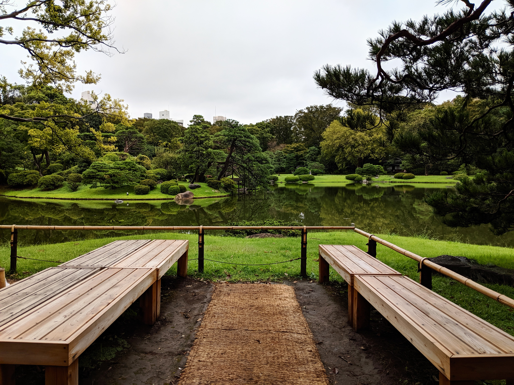
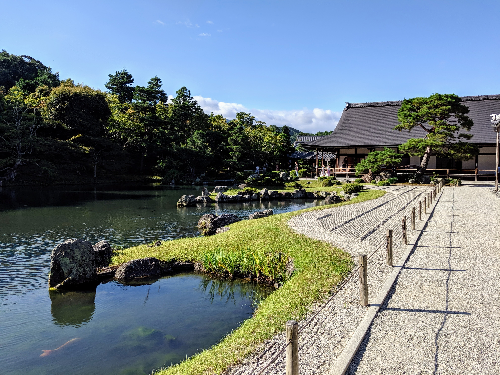

Three Months in Asia, briefly
Sometime in May of 2019, I got an email from "Scott's Cheap Flights" letting me know about some (surprise) cheap flights. I was only a couple months into what would become a long and necessary break from working, and I thought "maybe it's time for me to travel." Luckily, Scott had my back, and he pointed me to a round trip ticket from Charlotte to Tokyo for less than $600. Upon further finagaling and opening up a new Delta credit card, I saved another $200. Scott and I made a great team.
The only thing I had planned was an Airbnb in Tokyo for the first two weeks and a return flight home. I figured out the rest as I went. There was a friend of a friend I wanted to meet up with in Kyoto, some old co-workers and college friends in Korea,
and another friend living in Thailand who first met me in Taiwan, so I was grateful to have folks scattered around, and that guided me in deciding where to go. I was happy to stick to countries where I knew people. Turns out getting help from people while you travel around a foreign country is really something special.
Japan
I started in Tokyo. The flight was long and my neck pillow was not the game changer I was hoping it would be. I was completely disoriented and jet-lagged beyond reason. I began to see that this trip would be challenging and, for that reason, incredibly rewarding. And it was! Wow! Personal growth! Yes.




Korea
I had an awful room at a "love hotel" for the first couple nights because I didn't know any better. Hair everywhere (not mine), the air conditioner dripped on the bed, and the condoms they gave me in my welcome package were flavored. I got an Airbnb right away. In Seoul, I stayed up really late most nights and ate and drank a lot and met a guy I really liked and we went dancing until the sun came up. Koreans go very hard. Wonderful.


Taiwan
A friend I'd known for a while, who was living in Bangkok at the time, came to Taipei to meet me and since he'd previously lived there, he was an incredible guide. Didn't speak Mandarin but it didn't matter. The street markets! The stinky tofu! The rain! The public transportation! It's a city that's just big enough, and you can find very good cocktails.


Thailand
Bangkok was extremely hot. The food was incredibly cheap and excellent always. But it was really hot. The food was also hot. Picante hot, not caliente hot. Traffic was a mess, but I rode on the back of a scooter taxi several times. Thrilling and terrifying, hanging on required muscles in my legs I forgot I had. My friend and I went to a lot of bars. There was a lot of drinking in Thailand.


Korea (Again)
I went back to Korea because I had so much fun the first time, and I was excited to see the guy I'd met the first time around. It was November and already cold, and I wasn't prepared for that. Luckily they have winter coats in Korea! So I bought one. More eating more drinking more dancing.


Japan (again)
Back to Japan because I was flying out of Tokyo, and I was able to spend more time with friends of a friend I'd met the first go around. They were so kind and so fun. We went bowling. Bowling in Japan! Turns out it's the same. And yes, you guessed it, more eating more drinking more dancing!
Leaving was an awful affair. Coming back to the US was almost as disorienting as arriving in Tokyo that very first time. I wasn't at all happy about having to do it, really. So until next time, at least I've got these memories.
Thanks for reading this little thing; sorry I didn't put much time into it ☹